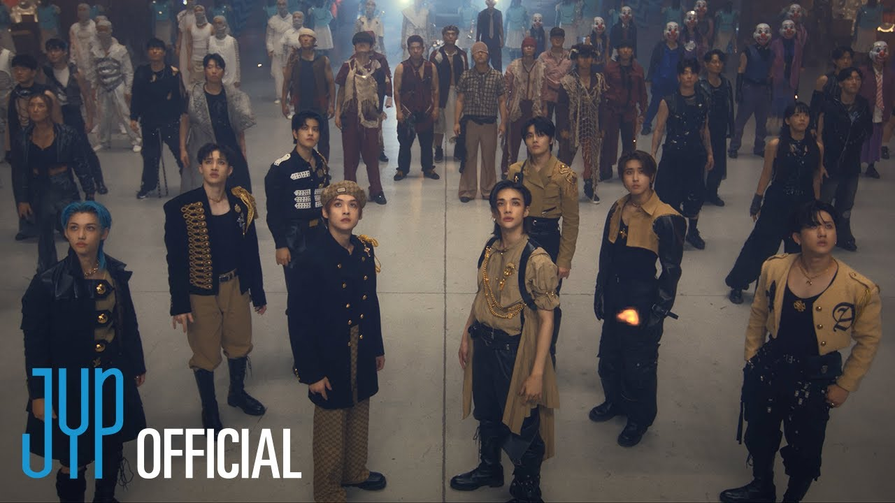

Biografia
Yang Jeong In, nasceu em 8 de fevereiro de 2001 em Busan, na Coreia do Sul, seu nome artistico é I.N, ele é um cantor sul-coreano e membro mais jovem do grupo de k-pop Stray Kids formado por meio do programa de sobrevivência sob o mesmo nome da JYP Entertainament. Ele fez sua estreia com o Stray Kids em 25 de março de 2018.
Suas posiçoes no grupo são: Vocal e Maknae,sua habilidade especial é cantar trot (gênero musical coreano). Ele treinou 2 anos para a estréia do grupo. Seus colegs dentro do grupo são: Bang Chan, Lee Know, Changbin, Hyunjin, Han, Felix e Seungmin; Bang Chan:clique para saber mais
Músicas

Música God's Menu;

Música Back Door;
Música Chamer;
Música LALALALA;
Música Megaverse;

Música S-class;
Segundo o próprio artista,essas são algumas das músicas que mais gosta de cantar.
Curiosidades
-Ele usou aparelho por 2 anos;
-Seu tipo sanguíneo é: A
-Seus apelidos são: Desert Fox (Raposa do deserto), Our Maknae (Nosso Maknae), Baby (Bebê) e Bean (Feijão);
-Tem como hábitos: Tocar o lóbulo das orelhas,pensar em coisas aleatórias e fazer os outros sorrirem;
-Seu signo do zodíaco é aquário;
-seu signo chinês é a da serpente;
Como conheci
Eu conheci o grupo Stray Kids através de um canal no Youtube chamado: Nada pra fazer 0.2. Fui assistindo vídeos e achando os meninos do grupo legais o que me levou a querer saber mais sobre grupo, bom o conheci dentro do grupo, e gosto de todos os meninos sem exeção.